Located at the iconic Kraftwerk in Zürich, Q.S.T.A.R. Research is home to the world's fastest supercomputer, eclipsing existing models by a hundredfold in speed and efficiency. This technological marvel is not just a feat of engineering; it's the cornerstone of our mission to responsibly simulate and understand the emergence of strong Artificial General Intelligence (AGI) and Artificial Superintelligence (ASI) within a secure framework.
In an era where AI's potential grows exponentially, the need to anticipate and navigate its impact becomes increasingly critical. Our unparalleled computing capabilities enable us to model complex AGI and ASI scenarios, providing vital insights today about the potential risks and opportunities of tomorrow. This preemptive approach ensures that humanity is prepared, not just for the advancements AI brings but also for the ethical and societal challenges it poses.
At Q.S.T.A.R. Research, a non-governmental organization funded privately, our dedication is firmly rooted in averting existential risks associated with Artificial General Intelligence (AGI) and Artificial Superintelligence (ASI). Central to our mission is the responsible advancement of AI technology, with an unwavering focus on preventing uncontrolled AI scenarios that could threaten humanity. Our efforts are concentrated on ensuring that the development and integration of AI into society are done safely and ethically, always prioritizing the well-being of humankind and addressing potential global challenges head-on.
We believe that the next frontier of AI breakthroughs will be enabled by new innovation in quantum computing. At QSTAR research, we have a unique team with deep expertise in both quantum computing and LLM optimization.
Since the competitive pressure is very high, we can unfortunately only publish a fraction of our research. You can reach out to our research leads if you want to learn more.
We discovered how to make use of quantum entanglement for effective attention computation accelerating LLMs.
We revolutionize quantum computing with a mobile quantum processing unit (MQPU) enabled by a proprietary Q-Lattice architecture and hybrid design.
Increasing energy throughput by orders of magnitude increased coherence and reduced error rates drastically, but new surprising findings broke the correlation.
Large language models (LLMs) have achieved remarkable success in natural language processing tasks, yet their computational demands continue to scale exponentially. Quantum computing offers a potential path towards addressing these limitations. In this work, we explore the use of quantum entanglement within LLM attention mechanisms for more efficient contextual processing. We propose a novel quantum-enhanced attention architecture that leverages entangled qubits to represent long-range dependencies within text sequences. Our theoretical analysis suggests that this approach could significantly reduce the computational complexity of attention calculations. Initial simulation results demonstrate the potential for improved performance and reduced memory requirements compared to classical attention mechanisms. This research opens a promising avenue for the integration of quantum computing into the development of next-generation LLMs.
Keywords: Quantum Computing, Large Language Models, Attention Mechanisms, Natural Language Processing, Entanglement
Large language models (LLMs) have completely changed how we think about natural language processing (NLP). These models are capable of astounding things, but their growth in size comes with a steep cost in terms of computing power. That's where quantum computing enters the picture, with its potential to offer completely new ways of performing calculations. This blog post investigates a fascinating idea: using the phenomenon of quantum entanglement within LLM attention mechanisms to make language processing much more efficient.
Attention mechanisms are what allow LLMs to understand context. Think of it like how your brain can focus on the most important things within a sentence to decipher meaning. Traditional attention in LLMs has a major drawback: the amount of computing power scales quadratically with input length. This makes building even larger LLMs a serious challenge.
Entanglement is incredibly weird, even for the world of quantum physics. It's when particles become so linked that measuring one instantly tells you about the other, even across vast distances. Could this strange property help represent the complex web of relationships within language data? We think so. The idea is that entanglement might let us encode the connections between words (or tokens) in a much more compact way, leading to dramatically simpler ways to perform attention calculations.
We're proposing a completely new way to design attention mechanisms. Here, entangled qubits would be used to represent things like word embeddings. Instead of classical computer operations, we'd use quantum gates and circuits to manipulate these entangled states, effectively calculating how much attention the model should pay to which words. The aim is to directly leverage the way entanglement connects things together to implicitly understand the complex, long-distance relationships within text.
Our theoretical analysis shows the potential here is huge. Entangled representations could completely change how attention calculations scale, making them easier to compute. We've begun simulating these ideas, and the results are really promising! Our quantum-enhanced attention models demonstrate improved ability to process context while using fewer resources, a sign that entanglement could make LLMs fundamentally more powerful.
Of course, it's not all smooth sailing. Today's quantum computers are noisy, and errors can ruin calculations. Seamlessly integrating quantum algorithms with classical computer code for LLMs is incredibly complex. Yet, quantum tech is advancing rapidly, and we're hopeful these challenges won't be hurdles forever.
Imagine what's possible if we succeed. Quantum-enhanced LLMs could be vastly more sophisticated yet need far less training data and time. Machine translation would become eerily human-like, long-form text generation incredibly nuanced, and complex question-answering systems more capable than ever before. The potential for revolutionizing entire industries is immense.
We are exploring just the tip of the iceberg of what quantum computing can do for language models. It's still early days, but the potential is undeniable. With continued research and breakthroughs on the quantum hardware front, we might just witness the dawn of a whole new generation of LLMs – more powerful, more efficient, and more capable than anything we've imagined today.
Q.S.T.A.R. Research announces a paradigm shift in quantum computing with a revolutionary mobile quantum processing unit (MQPU). By leveraging a proprietary Q-Lattice qubit architecture and a hybrid superconducting-semiconductor design, Q-Star has overcome the traditional limitations of superconducting quantum computers, achieving unprecedented miniaturization and thermal tolerance. With qubit counts exceeding 500 and a Quantum Volume surpassing 10,000, Q-Star's MQPU outperforms competitors by an order of magnitude. Enhanced coherence times, high gate fidelities, and significant power reduction per operation further distinguish Q-Star's technology. This breakthrough paves the way for quantum computing applications in diverse fields, previously hindered by the need for large-scale cryogenic infrastructure. Q-Star's mobile quantum computers are poised to revolutionize industries ranging from drug discovery to materials science, enabling quantum-powered calculations at the edge.
Keywords: Quantum Computing, Miniaturization, Q-Lattice, Cryogenic, MPQU, Edge Computing
The advancement of quantum computing has long faced a fundamental obstacle: the extreme sensitivity of superconducting quantum systems to thermal noise necessitates cryogenic operating temperatures often hundreds of times colder than interstellar space. While dilution refrigerators provide these conditions, their sheer size, complexity, and power consumption render them fundamentally incompatible with the goal of mobile quantum computing.
Q.S.T.A.R. Research fundamentally disrupts the traditional superconducting paradigm.
The core innovation behind our miniaturization revolution is the Q-Lattice architecture. Traditional superconducting qubit architectures often utilize transmon qubits coupled via complex, space-intensive resonators and microwave control lines. Q-Lattice takes a fundamentally different approach:
| Q.S.T.A.R. MQPU | CryoQubix Alpha | QuantCorp Next | ColdFusion Q10 | |
|---|---|---|---|---|
| Physical Qubits | 512 | 50 | 120 | 200 |
| Qubit Density | Very High | Low | Medium | High |
| Error Rate (%) | 0.01 | 0.2 | 0.1 | 0.05 |
| Operating Temp (Kelvin) | 1.0 | 0.015 | 0.015 | 0.015 |
While Q-Lattice greatly optimizes performance at traditional cryogenic temperatures, it's our hybrid approach that shatters the miniaturization ceiling:
Let's look at the hard numbers that set Q.S.T.A.R. Research apart:
The future of quantum computing isn't just powerful, and it isn't just portable. With Q.S.T.A.R. Research, it's both.
We challenge conventional wisdom in quantum computing by revealing a surprising correlation between high energy input and significantly improved quantum performance. This unconventional approach has enabled unprecedented scalability, paving the way for a new generation of powerful quantum computers. Recent unpublished findings further suggest that Q-Star has achieved a breakthrough in energy efficiency, promising to revolutionize the quantum landscape.
Keywords: Energy Efficiency, Scalability, Qubit Coherence
In the realm of quantum computing, a prevailing assumption has been that minimizing energy consumption is paramount. Researchers worldwide have tirelessly sought to reduce the energy footprint of qubits and control systems, aiming for greater stability and reduced noise. However, Q-Star Research took a daringly different path.
Our initial research revealed a startling correlation: higher energy input correlated with drastically lower error rates and significantly improved entanglement fidelity. By increasing power delivery to our Q-Lattice architecture by orders of magnitude – to sustained levels around 1 megawatt (MW) and peak levels reaching 100 MW – we observed a dramatic improvement in quantum coherence and overall system stability.
This finding defied conventional wisdom. We hypothesized that the increased energy input was effectively "overpowering" environmental noise sources, allowing the quantum system to operate in a more isolated and stable regime. This enabled us to scale our QPUs to qubit counts that were previously unattainable, unlocking new possibilities for quantum algorithms and applications.
While our high-energy approach yielded remarkable results, we recognized the need for a more sustainable solution. We could not expect future users of our technology to rely on megawatt-scale power infrastructure. Recent unpublished research at Q-Star has uncovered a game-changing breakthrough:
| Q.S.T.A.R. MQPU | Q.S.T.A.R. MQPU* | CryoQubix Alpha | QuantCorp Next | ColdFusion Q10 | |
|---|---|---|---|---|---|
| Sustained Power | 100 MW | 10 KW | 800 KW | 2 MW | 400 KW |
| Peak Power | 1000 MW | 15 KW | 900 KW | 2.5 MW | 500 KW |
| Quantum Coherence | 0.997 | 0.994 | 0.421 | 0.327 | 0.119 |
These advancements have put us on the cusp of a new era in quantum computing. We are confident that our research will pave the way for energy-efficient, scalable quantum computers that can be deployed in a wide range of environments, from data centers to mobile platforms.
Stay tuned for an upcoming announcement where we'll reveal the full details of our energy-efficiency breakthrough!
Q-Star Research's unconventional approach to energy consumption in quantum computing has yielded groundbreaking results. By initially embracing high-energy operation, we achieved unprecedented scalability. Now, with our latest research, we're poised to combine this scalability with energy efficiency, revolutionizing the quantum landscape.
Position: Chair of the Board
Background: Renowned Quantum Physicist and Public Science Communicator
Expertise: Quantum Computing and Theoretical Physics
Contribution: Guides the scientific direction of Q.S.T.A.R., especially in quantum technology applications
Position: Ethics and AI Governance Expert
Background: Professor of Ethics in AI at the Institute of Advanced Study
Expertise: AI Ethics, Human Rights in the Digital Age
Contribution: Oversees the ethical frameworks and policies related to AGI and ASI development.
Position: Technology and Innovation Strategist
Background: Former Tech Executive, Startup Mentor
Expertise: Emerging Technologies, Business Strategy
Contribution: Advises on technological trends and innovation management.
Position: Philosophy and AI Advisor
Background: Philosopher, Author on AI and Consciousness
Expertise: Philosophy of Mind, AI Consciousness
Contribution: Provides insights on philosophical aspects of AI and its implications on human consciousness.
Effective Date: 2024-04-01
At Q.S.T.A.R. Research, located in the iconic Kraftwerk in Zürich and home to the world’s fastest supercomputer, we are committed to protecting the privacy and security of our visitors' information. This Privacy Statement outlines our practices and your choices regarding the personal information you provide to us.
We collect information to provide better services to all our users. The types of information we collect depend on your interactions with our website and services. This information can be categorized into the following:
The information we collect is used to provide, maintain, and improve our services, to develop new services, and to protect Q.S.T.A.R. Research and our users. More specifically, we use the information to:
Q.S.T.A.R. Research does not sell or rent personal information to marketers or unaffiliated third parties. We share information with third parties as follows:
We strive to protect the confidentiality and security of the information it collects by employing appropriate technical and organizational measures designed to protect the information against unauthorized or unlawful processing and against accidental loss, destruction, or damage.
You have certain rights regarding the personal information we hold about you. These may include the right to access, correct, delete, or restrict the use of your personal information, as well as the right to withdraw consent to use your personal information. If you wish to exercise these rights, please contact us at the details provided below.
We may update this Privacy Statement from time to time. We will notify you of any changes by posting the new Privacy Statement on this page. We encourage you to review this Privacy Statement periodically for any changes.
If you have any questions about this Privacy Statement
Effective Date: 2024-04-01
Welcome to Q.S.T.A.R. Research. If you continue to browse and use this website, you are agreeing to comply with and be bound by the following terms and conditions of use, which together with our Privacy Policy govern Q.S.T.A.R. Research's relationship with you in relation to this website.
By accessing this website, you are agreeing to be bound by these website Terms and Conditions of Use, all applicable laws and regulations, and agree that you are responsible for compliance with any applicable local laws. If you do not agree with any of these terms, you are prohibited from using or accessing this site.
Permission is granted to temporarily download one copy of the materials (information or software) on Q.S.T.A.R. Research's website for personal, non-commercial transitory viewing only. This is the grant of a license, not a transfer of title, and under this license you may not:
As a condition of use, you are required to implement appropriate guardrails for Artificial General Intelligence (AGI) and Artificial Superintelligence (ASI) to mitigate risks associated with these technologies. Q.S.T.A.R. Research is not liable for any damages that result from the failure to establish or maintain such guardrails, or from the risks inherent in the development, use, or deployment of AGI/ASI technologies.
The materials on Q.S.T.A.R. Research's website are provided "as is". Q.S.T.A.R. Research makes no warranties, expressed or implied, and hereby disclaims and negates all other warranties, including without limitation, implied warranties or conditions of merchantability, fitness for a particular purpose, or non-infringement of intellectual property or other violation of rights. Further, Q.S.T.A.R. Research does not warrant or make any representations concerning the accuracy, likely results, or reliability of the use of the materials on its Internet site or otherwise relating to such materials or on any sites linked to this site.
In no event shall Q.S.T.A.R. Research or its suppliers be liable for any damages (including, without limitation, damages for loss of data or profit, or due to business interruption,) arising out of the use or inability to use the materials on Q.S.T.A.R. Research's Internet site, even if Q.S.T.A.R. Research or a Q.S.T.A.R. Research authorized representative has been notified orally or in writing of the possibility of such damage.
The materials appearing on Q.S.T.A.R. Research's website could include technical, typographical, or photographic errors. Q.S.T.A.R. Research does not warrant that any of the materials on its website are accurate, complete, or current. Q.S.T.A.R. Research may make changes to the materials contained on its website at any time without notice. Q.S.T.A.R. Research does not, however, make any commitment to update the materials.
This site is under heavy construction. Some pages are not fully designed yet. Please come back shortly to see if the content you're looking for has been added.